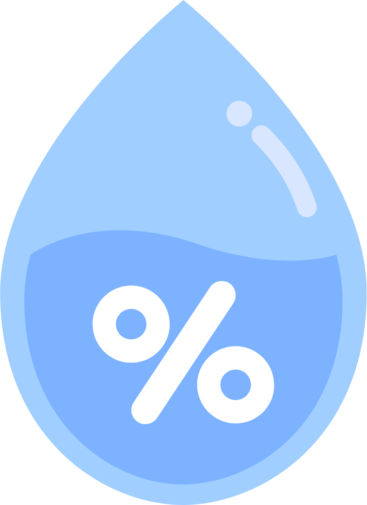

Pantau kondisi lingkungan Anda dan dapatkan perkiraan kelembapan udara harian hanya dengan mengunggah data sensor.

Cukup ikuti langkah berikut untuk mendapatkan prediksi kelembapan udara Anda.
Unggah file data sensor Anda, atau isi form manual jika Anda hanya punya beberapa data.
Sistem membaca dan memproses data Anda secara otomatis, biasanya hanya dalam hitungan detik.
Lihat grafik dan ringkasan hasil, lalu unduh prediksi kelembapan udara dalam format CSV.
Ringkasan singkat dari data kelembapan udara, disajikan dalam grafik dan angka yang mudah dipahami.
Unggah data sensor Anda dan dapatkan prediksi kelembapan udara hanya dalam beberapa langkah mudah.